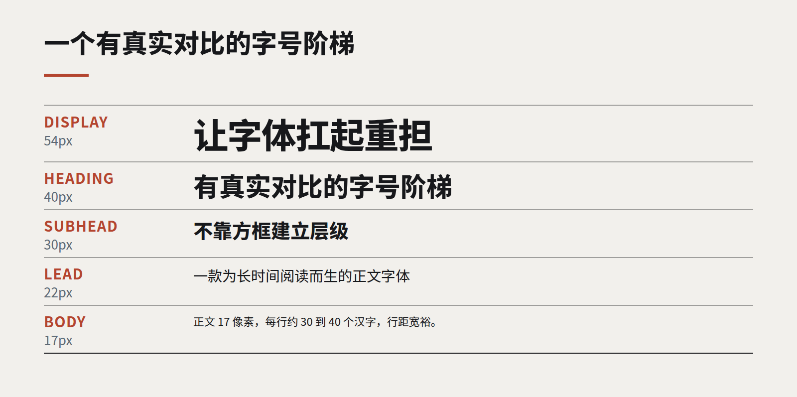

洞察
设计语言
让字体扛起重担
插画预算在缩水，图库照片千篇一律。字体是唯一出现在每一屏上的品牌资产，而大多数设计系统仍然把它当成事后才想起的东西。

把大多数企业官网的标志、照片和颜色拿掉，你会很难把它们区分开。字体是一款尺寸合理的无衬线体，按默认方式排版，尽职尽责，仅此而已。这是一种浪费，因为字体是视觉识别中唯一出现在客户看到的每一屏上的部分。
我们现在做的品牌工作，越来越多是由字体主导的。不是装饰性字母，而是一套经过考量的排版系统：一到两个因性格而选的字体家族、一个真正有对比的字号阶梯，以及标题、正文和数据各自如何表现的规则。当这套系统足够强，照片就成了可选项，插画也从拐杖变成了选择。
为什么字体现在更重要
有三个变化把排版推到了更靠前的位置。
- 图库图片失去了辨识度。 生成图像和少数几个图库，意味着图片已无法把一个品牌和另一个品牌区分开。读者会直接略过它们。
- 界面更密集了。 仪表盘、表格和长文档大多是文字。文字的质量，就是产品的质量。
- 可变字体成熟了。 一个字体文件就能高效覆盖大范围的字重和字宽，丰富的排版系统不再以牺牲页面速度为代价。

一套排版系统需要什么
- 一款有性格的展示字体。 用在标题和关键数字上，尺寸大到足以被注意到。个性就住在这里。
- 一款为阅读而生的正文字体。 在 15 到 18 像素时读起来舒服，数字清晰，并能很好地支持你所发布的语言。对中英双语网站，要尽早测试两种字体的搭配；字重和垂直节奏的差异比大多数人以为的更大。
- 一个有对比的字号阶梯。 很多系统的字号太接近，只好用颜色和方框来挽救层级。相邻层级之间 1.25 到 1.33 的比例，通常能让标题真正有分量。
- 把行长和行距写成规则。 正文每行约 60 到 75 个字符（中文约 30 到 40 字），行高要宽裕。这两个设置对可读性的贡献，超过任何字体选择。
- 数据用等宽数字。 在列中对齐的数字，让表格和财务数据一眼就能读懂。
字体即品牌
在我们自己的网站上，我们做了一个刻意的选择：案例库里不用图库照片，由一款强有力的标题字体承载大部分识别。结果是，一行排得好的标题，比一张首屏大图更能说明这个工作室是谁。
客户有时担心字体主导的设计会显得单调。只要对比是真实的，这种情况很少发生。一个是正文三倍大、又有些个性的标题，其存在感不输任何照片——而且当下一篇内容到来、完全没有配图预算时，它依然好看。
从哪里开始
盘点你现有的排版：用了几个字体家族，实际用了多少种字号，它们是否遵循某个阶梯。大多数组织会发现，五种就够的地方用了十几种。把它们收拢，选一款有性格的展示字体，把规则写下来。这是能买到的最便宜的品牌升级。
继续阅读
全部洞察